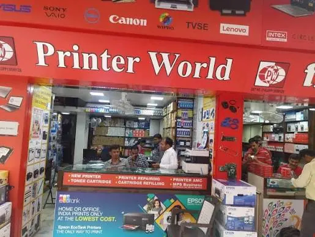

Office & business
Meet Printerworld: Your One-Stop Shop for Printers, Laptops and Repairs
Introduce Printerworld as a convenient destination to explore printers, laptops, accessories and repair support, with practical advice for choosing the right solution.
Introduction
Choosing the right technology can be confusing. Whether you’re a home user looking for a printer for school, a student looking for a laptop or a small business looking for reliable office equipment, spare supplies and repair support. We’ve covered some common questions you might want to ask when looking to choose the right printer or laptop for your needs. Printerworld can offer you a great place to find your options and get the right advice for your business. Always check with Printerworld to see what products and services we have available.

Where to Find the Right Printers
There are a few different types of printers available. Inkjet printers use liquid ink and are usually a good option for colour, photos or creative work. Laser printers use toner and are a good option for heavy text printing. Ink tank printers could be the right choice if you’re going to be printing a lot of colour pages and wanting to know the cost of refilling.
Home users may want something small with wireless printing. Students may need to be able to scan and copy. Small office users may want automatic 2 sided printing, larger paper tray, network connection and higher recommended monthly volumes.
Work out the amount of pages you’ll be printing a month and whether you need colour printing. Also consider how much the correct supplies will cost you as well as the printer itself. Printerworld can be a good place to start.
Where to Find the Right Laptop
Laptops can have very different requirements depending on what you want to do with them. If you’re using it for basic web browsing, online lessons and document editing then you probably won’t need a high spec machine. However if you’re a developer, designer or video editor you may need extra ram, a powerful processor and dedicated graphics. If you’re a business user and travel often then you may want something light, long battery life, secure and a good webcam.
Look at the key features such as the processor, ram, SSD size, screen size, quality, battery life and ports. Many general users will be happy with a laptop that has 16GB ram and an SSD. This depends on what software you will be using and your budget. If you’re using specialised software then check what the recommended specs are from the software provider.
Make sure you’re looking at the laptop as a whole. You may find that the keyboard, hinges, build, support and warranty can make a big difference to your experience. Always check the exact spec as similar models can have different amounts of ram, storage and screens
Choosing the Right Supplies and Accessories
Always choose the correct cartridge, toner or laptop accessory for the exact machine you have. Don’t assume they’ll fit just because they have a similar name. Using the wrong supplies can cause problems with fitting, poor print quality or damage. Using the wrong charger can cause safety and performance issues.
When ordering supplies make sure to note down the exact model of your printer and check the Cartridge/Toner number in your user manual or manufacturers support pages. For laptop accessories make sure you know what connection type, power needs, size and standards they support. Just because something has a USB-C connection doesn’t mean all cables and ports will support video or fast charging.
Always keep a record of the model numbers of your devices. This can help you to purchase again without issues. If you’re unsure always ask to check they’ll fit.
Repair and Support
Technology can have many issues throughout its lifetime. Laptops can have overheating, battery, keyboard, screen and charging issues. Printers can have paper jams, faded print quality, connectivity and wear and tear issues. Some issues can be due to incorrect settings or supplies whilst others need to be checked by a technician.
To get the best support start by describing the issue clearly. What error messages are you getting? Are there any odd noises? What have you changed recently? If it’s a laptop try to backup your important files. If it’s a printer save a print out of the issue. Is it affecting all pages?
Before agreeing to any repairs ask what the issue is, what parts may be needed, how much it will cost and if there is a warranty on the service. Check with us to see what repair and support options we currently have available for your device.
Buying Technology with More Knowledge
Having a one stop shop for your technology can help you to think about your full requirements. Instead of just looking at the price of a printer consider how many pages you’ll be printing, cost of supplies, paper sizes and connectivity. Instead of just looking at the brand of the processor on a laptop consider the ram, storage, screen, battery and after sales support.
Try to have a short list of what you need. For printers consider how many pages you expect to print a month, colour printing, paper sizes and if you’ll need to scan or copy. For laptops consider what applications you’ll be using, portability, screen size and budget. For repairs note down the model, issue and warranty.
This will help you to have a more useful conversation and avoid paying for features you won’t be using. Always ask for confirmation in writing of the exact model, spec, price and warranty.
Student and home users often have varied needs. Students may need a laptop for assignments, research, presentations and online learning. The home printer may be used for forms, photos and school projects. You may want something reliable with manageable running costs.
A small all in one printer may be a good option if you need to scan and copy. If you’re printing lots of colour pages then compare ink tanks and cost of genuine ink. For laptops consider battery life, weight, comfortable keyboard and enough ram for multiple tasks.
As a family try to get into good habits. Place your devices on a stable surface, don’t have any liquids near your devices, download official updates and backup your important files. Teach your children how to correctly load paper and not to force paper that is jammed. Taking a little care can help to avoid issues that could have been avoided and keep your equipment useful for longer.
Small Office Users
Small offices will need equipment that will help your staff. A printer that can be shared should have enough capacity for your needs, have the right connectivity and easy to get supplies. Laptops should be chosen based on the role of the staff member. Consider security and support.
Keeping a register of your equipment can help your business. Note down the model, serial number, date purchased, warranty end date, who it belongs to and service history. This can help you to plan when to service your equipment, purchase the correct supplies and when to replace. It can also tell you if you have too many different models.
Security is important. Make sure any software is up to date, use strong logins, limit admin rights and follow your company policies for storing data and backups. Printers with network connections should be set up securely. Agree with the technician how they’ll have access to your devices and how you’ll keep your business secure.
What to Look for in a Service
A good technology service will be transparent. You should be able to understand what product/service they are suggesting, why it’ll work for you and how much it’ll cost overall. When repairing they should be able to tell you what the issue is, what parts are needed, how much labour, how long it should take and if there is a warranty.
When purchasing make sure you know the exact model and spec. Are any accessories included? What supplies will be needed? What are the manufacturers warranty conditions? When purchasing spare parts ask if they are original, approved or compatible. This will help you to compare fairly.
Keep your invoices, warranty and service history. This can help if you have any issues later. Check our website and customer service to see what products we have available currently.
Conclusion
Printerworld can be a great place to start when looking for printers, laptops, supplies and repair support. The best choice for technology will be based on what you actually need, running costs, compatibility and after sales support.
Whatever you’re looking for whether it’s for home, college or a small office take the time to look at the spec and ask practical questions. Always check with us to see what products we have available, what service we can offer, warranty and price. Having clear requirements and the right information can make choosing and maintaining your technology much easier..
Need a hand with your printer or laptop?
Printerworld sells printers, laptops and genuine supplies, and repairs and services both. Bring in your model number and we will help you get it right.